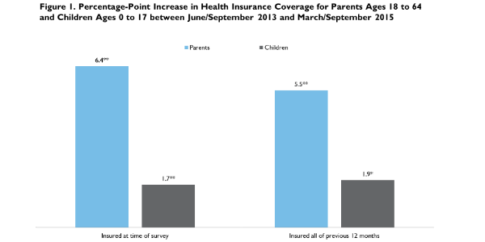

|  |
|
|||||||||||||||||||||||||||||||||||||||||||||||||||||||||||||||||||||||||||||||||||||||||||||||||||||||||||||||||||||||||||||||||||||||
Time for a Checkup: Changes in Health Insurance Coverage, Health Care Access and Affordability, and Plan Satisfaction among Parents and Children between 2013 and 2015
Michael Karpman, Jason Gates, and Genevieve M. KenneyJanuary 6, 2016
The Urban Institute’s Health Reform Monitoring Survey (HRMS) has been tracking health insurance coverage and related outcomes among parents and children since mid-2013. A previous HRMS analysis found a decline of 5.8 percentage points in the uninsurance rate for parents, with particularly large declines among low-income and Hispanic parents and a narrowing of the difference in uninsurance rates between parents and children through early 2015 (Karpman et al. 2015). This brief uses new data collected in September 2015 and previous HRMS rounds to assess how health insurance coverage and several measures of health care access, affordability, and satisfaction with health plans have changed for parents and children between 2013, just before the major coverage provisions of the Affordable Care Act (ACA) were implemented, and 2015, after the completion of the second open enrollment period.1
The ACA included many policy changes (e.g., Medicaid expansion, tax credits for coverage offered through the new health insurance Marketplaces, insurance reforms, and an individual mandate) designed to increase coverage among nonelderly adults, including parents living with their dependent children. Children were not the primary target of the ACA’s coverage provisions given that they have had substantially lower uninsurance rates than parents and other adults. But coverage was expected to increase among children under the ACA because of a combination of policies, including the expansion of Medicaid to more parents, tax credits for Marketplace coverage, new outreach and enrollment efforts, and the individual mandate. Several federal surveys have found declines in uninsurance among adults and children since 2013 (Alker and Chester 2015; Martinez and Cohen 2015; Smith and Medalia 2015), but these analyses have not addressed changes for parents and few have focused on how other health care indicators, such as health care access, affordability, and satisfaction with health plans, have been changing. Among the many reasons for studying these outcomes for parents are the potential spillover benefits to children of extending coverage to parents, which has been shown to be associated with increases in children’s coverage (Dubay and Kenney 2003) and use of care (Davidoff et al. 2003), and the linkage of parents’ health and financial stability to the health and well-being of their children (Case, Lubotsky, and Paxson 2002; Glied and Oellerich 2014).
What We Did
This brief draws on several rounds of HRMS data, the latest of which were collected in September 2015 based on questions from the core HRMS and its child supplement (HRMS-Kids), to assess changes in health insurance coverage, access, affordability, and plan satisfaction among parents ages 18 to 64 and children ages 0 to 17. In each round of the HRMS, approximately 7,500 nonelderly adults complete the survey. The HRMS-Kids was added to the HRMS in the second quarter of 2013 to ask questions about a randomly selected child in respondents’ households, yielding information on approximately 2,400 children each round. Our definition of parents, which is based on information provided in the HRMS-Kids, includes all parents and other legal guardians living with a dependent child age 17 or under. In some cases, adults who are not parents or guardians (e.g., other relatives or nonrelatives) respond to the HRMS child supplement questions on behalf of a randomly selected child in the household; those cases are excluded from analyses of parents and guardians but are included in those that pertain to children.2
We examine changes between June/September 2013 and March/September 2015.3 Data from June and September 2013 and data from March and September 2015 are pooled to increase the precision of our estimates.4 The exception is for the plan satisfaction questions, in which we focus on changes between June 2013 and September 2015.5
Estimates of coverage for children reported in this brief differ from previous estimates because of a revised editing process that is more consistent with the editing process used for adults in the HRMS. This change uses other information from the survey to identify the coverage status of children reported as covered but for whom respondents did not report a specific type of coverage from the list provided in the survey.6
Each round of the HRMS and HRMS-Kids is weighted to be nationally representative. We use these weights and regression adjustment to control for differences in the demographic and socioeconomic characteristics of the respondents and their children across the different rounds of the survey.7 This allows us to remove any variation in coverage, access, affordability, or plan satisfaction caused by changes in the observable characteristics of people responding to the survey over time. However, the basic patterns shown for the regression-adjusted measures are similar to those based solely on simple weighted estimates.8 We focus on statistically significant changes in coverage and other outcomes over time, defined as differences that are significantly different from zero at the 5 percent level or lower. We provide a 95 percent confidence interval (CI) for key estimates.
Though HRMS estimates capture the changes in coverage, access, affordability, and plan satisfaction under the first and second open enrollment periods of the ACA, the estimates do not reflect the effects of some important ACA provisions (such as the ability to keep dependents on health plans until age 26, early state Medicaid expansions, and the maintenance of eligibility provision for children) that were implemented before 2013. In addition, these estimates reflect changes beyond the effects of the ACA because they do not control for long-term trends in health insurance coverage, access, affordability, or plan satisfaction that predate the ACA or control for changes in the business cycle.
What We Found
Between June/September 2013 and March/September 2015, the shares of parents who were insured all year and insured at the time of the survey increased substantially; children also had coverage gains, but they were smaller in magnitude.
Both parents and children experienced gains in health insurance coverage between June/September 2013 and March/September 2015. The share of parents reporting coverage at the time of the survey increased 6.4 percentage points (95% CI [5.1, 7.8]) during this period, and the share of children with coverage increased 1.7 percentage points ((95% CI [0.6, 2.8]; figure 1).9 The share of parents who were insured for all of the past 12 months also increased 5.5 percentage points (95% CI [3.9, 7.1]), and children saw a 1.9 percentage-point (95% CI [0.4, 3.4]) increase in full-year coverage. Though the estimated change in both measures of coverage was higher for parents, children started from a higher baseline rate of coverage. According to the HRMS, the percentage of parents with coverage at the time of the survey increased from 83.2 to 89.6 percent, compared to an increase in the share of covered children from 94.7 to 96.4 percent (table 1).10 As of March/September 2015, 89.8 percent of children and 80.3 percent of parents were reported to be insured for all of the past 12 months.
Access to health care improved for parents and was unchanged for children.
Compared with parents surveyed in June/September 2013, parents surveyed in March/September 2015 were 1.7 percentage points (95% CI [0.1, 3.4]) more likely to report having a usual source of care, 3.7 percentage points (95% CI [1.2, 6.1]) more likely to report getting a routine checkup in the past year, and 2.9 percentage points (95% CI [1.0, 4.8]) less likely to report trouble finding a doctor in the past year (figure 2). There were no statistically significant changes in any of these measures reported for children during this period. For each measure, however, children had higher levels of access to care than parents in both June/September 2013 and March/September 2015 (table 1).11
Fewer parents report that they went without care for affordability reasons or struggled to pay family medical bills.
Health care affordability has also improved for families with children. Between June/September 2013 and March/September 2015, there was a 4.0 percentage-point (95% CI [1.7, 6.2]) decline in the share of parents reporting that they went without health care,12 excluding dental care, in the past 12 months because they could not afford it (figure 3). There was also a 6.2 percentage-point (95% CI [4.1, 8.4]) decline in the share with an unmet need for dental care for affordability reasons. The share of parents reporting unmet needs for two or more types of health care in the past 12 months declined 4.4 percentage points (95% CI [2.6, 6.1]). The only statistically significant change among the three unmet need measures for children was a 1.8 percentage-point (95% CI [0.1, 3.5]) decrease in the share of children with unmet needs for dental care. The share of children with unmet needs for care was substantially lower than the share of parents with unmet needs in both 2013 and 2015 (table 1).
Parents reported a 5.6 percentage-point (95% CI [3.4, 7.8]) drop in problems paying family medical bills in the past 12 months between June/September 2013 and March/September 2015. Relative to 2013, 2015 HRMS data also show declines in reported problems paying children’s medical bills and increased confidence in being able to meet children’s health care needs (figure 4). For instance, the share of respondents reporting problems paying their child’s medical bills in the past 12 months declined 4.2 percentage points (95% CI [2.7, 5.6]). The share of respondents reporting that they are very or somewhat confident their child could get health care if the child needed it increased 3.3 percentage points (95% CI [1.0, 5.6]).
Insured parents report higher satisfaction with the financial aspects of their coverage, and respondents reported higher satisfaction with financial and nonfinancial aspects of their children’s coverage.
Between June 2013 and September 2015, the proportion of insured parents reporting that they are very or somewhat satisfied with their premiums increased 7.8 percentage point (95% CI [5.2, 10.4]) and the share reporting satisfaction with the protection their coverage provides against high medical bills increased 4.1 percentage points (95% CI [1.4, 6.8]; figure 5). Higher satisfaction was also reported for multiple aspects of plans covering children, including satisfaction with premiums (7.7 percentage points; 95% CI [4.5, 10.8]); co-payments and coinsurance (7.6 percentage points; 95% CI [5.0, 10.3]); the range of health care services available (3.4 percentage points; 95% CI [0.8, 5.9]); and choice of doctors and other providers (2.6 percentage points; 95% CI [0.1, 5.0]).
Some of these increases in plan satisfaction may reflect previously insured parents becoming more satisfied with their or their children’s coverage, which in some cases may be more comprehensive following the implementation of the ACA’s essential benefit provisions. They may also reflect increased satisfaction because of new financial assistance through premium tax credits or cost sharing reductions. However, it is also possible that some of the increase in plan satisfaction reflects a shift in the composition of the population of insured parents and children as those previously uninsured gained coverage through Medicaid, obtained coverage through a subsidized Marketplace plan, or took up an offer of employer-based coverage.
What It Means
Parents experienced notable gains in insurance coverage, access to care, and health care affordability between June/September 2013 and March/September 2015. Over this period, children experienced statistically significant, but smaller, percentage-point gains in coverage relative to their parents, indicating further increases in coverage among children that build on the high coverage rates that children had before the implementation of the major coverage provisions of the ACA (Rosenbaum and Kenney 2014). Although some of the improvements for children and parents may be caused by factors other than the ACA, these data suggest that the health insurance and health care landscapes have improved for parents: fewer parents report being uninsured, being without a usual source of care, having trouble finding a doctor or struggling to pay medical bills, or having unmet needs for care because care was not affordable. Fewer statistically significant changes were found in access and affordability among children, but where stastically significant changes were found, they pointed to improvements in access and affordability. Moreover, parents with insurance report higher levels of satisfaction with financial aspects of their plans, and respondents reported higher satisfaction with financial and nonfinancial aspects of children’s plans, suggesting coverage gains have not occurred at the expense of overall coverage quality.
These results raise the question of what is driving the coverage gains for parents and children. Future research will address the source of the coverage gains and attempt to assess the extent to which the gains in coverage for parents and children are the result of the ACA rather than the improving economy or other factors. Though this brief found improvements in coverage and related outcomes for parents, millions of parents remain uninsured.13 Moreover, whether the coverage, access, and affordability improvements reported in this brief can be sustained and augmented will depend in part on the success of outreach and enrollment assistance efforts for the third open enrollment period and whether Medicaid take-up rates increase among eligible parents and children (Karpman, Gates, and Kenney 2015).
Further gains in coverage would also be possible if Medicaid is expanded in the 20 states that have not yet pursued this option under the ACA. Several of the largest nonexpansion states have particularly low income eligibility thresholds in Medicaid, such as Florida (34 percent of the federal poverty level [FPL]), Georgia (37 percent of FPL), North Carolina (44 percent of FPL), Texas (18 percent of FPL), and Virginia (44 percent of FPL).14 A recent analysis of American Community Survey data found that children’s uninsurance rates fell more sharply between 2013 and 2014 in states that expanded Medicaid for adults than in states that did not expand Medicaid (Alker and Chester 2015), which highlights the potential for additional gains in coverage for children from new state decisions to expand Medicaid.
References
Alker, Joan, and Alisa Chester. 2015. Children’s Health Insurance Rates in 2014: ACA Results in Significant Improvements. Washington, DC: Georgetown University Health Policy Institute, Center for Children and Families.
Case, Anne, Darren Lubotsky, and Christina Paxson. 2002. “Economic Status and Health in Childhood: The Origins of the Gradient.” American Economic Review 92 (5): 1308–34.
Davidoff, Amy, Lisa Dubay, Genevieve M. Kenney, and Alshadye Yemane. 2003. “The Effect of Parents’ Insurance Coverage on Access to Care for Low-income Children.” Inquiry 40: 254–68.
Dubay, Lisa, and Genevieve M. Kenney. 2003. “Expanding Public Health Insurance to Parents: Effects on Children’s Coverage under Medicaid.” Health Services Research 38 (5): 1283–1301.
Glied, Sherry, and Don Oellerich. 2014. “Two-Generation Programs and Health.” Future of Children 24 (1): 79–97.
Karpman, Michael, Jason Gates, and Genevieve M. Kenney. 2015. QuickTake: Further Reducing Uninsurance among Parents Will Require Tackling Affordability Concerns. Washington, DC: Urban Institute.
Karpman, Michael, Genevieve M. Kenney, Nathaniel Anderson, and Sharon K. Long. 2015. QuickTake: The Gap in Uninsurance Rates for Parents and Children Narrowed between September 2013 and March 2015. Washington, DC: Urban Institute.
Karpman, Michael, Sharon K. Long, and Michael Huntress. 2015. Nonfederal Surveys Fill a Gap in Data on ACA. Washington, DC: Urban Institute.
Manatt Health Solutions. 2015. “Tax Season Special Enrollment Periods.” Los Angeles: Manatt, Phelps & Phillips, LLP.
Martinez, Michael E., and Robin A. Cohen. 2015. Health Insurance Coverage: Early Release of Estimates from the National Health Interview Survey, January-June 2015. Hyattsville, MD: National Center for Health Statistics.
Rosenbaum, Sara, and Genevieve M. Kenney. 2014. “The Search for a National Child Health Coverage Policy.” Health Affairs 33 (12): 2125–35.
Smith, Jessica C., and Carla Medalia. 2015. Health Insurance Coverage in the United States, 2014. Washington, DC: US Census Bureau.
State Health Access Data Assistance Center. 2013. Comparing Federal Government Surveys that Count the Uninsured. Princeton, NJ: Robert Wood Johnson Foundation.
About the Series
This brief is part of a series drawing on the HRMS, a quarterly survey of the nonelderly population that explores the value of cutting-edge Internet-based survey methods to monitor the ACA before data from federal government surveys are available. Funding for the core HRMS is provided by the Robert Wood Johnson Foundation and the Urban Institute. This brief was funded by the David and Lucile Packard Foundation and funding from an anonymous donor. It draws on the HRMS-Kids, which was conducted in partnership with the Center for Children and Families at Georgetown University and is currently funded by the David and Lucile Packard Foundation and an anonymous donor. The authors are grateful to Sharon K. Long, Douglas Wissoker, Nathaniel Anderson, Stacey McMorrow, Lisa Clemans-Cope, Lisa Dubay, Joan Alker, Tricia Brooks, and Liane Wong for their input on the HRMS-Kids and to Stacey McMorrow for helpful comments on this brief.
For more information on the HRMS and for other briefs in this series, visit www.urban.org/hrms.
About the Authors
Michael Karpman is a research associate, Jason Gates is a research assistant, and Genevieve M. Kenney is a senior fellow and codirector with the Urban Institute’s Health Policy Center.
Notes 1The Centers for Medicare and Medicaid Services extended a special open enrollment period for the federally facilitated Marketplace from March 15, 2015, to April 30, 2015, to individuals who (1) did not have coverage in 2014, (2) were subject to the tax penalty for not having coverage in that year, and (3) became aware of the tax penalty after the end of the second open enrollment period (February 15, 2015) in connection with preparing their taxes (see Centers for Medicare and Medicaid Services, “CMS Announces Special Enrollment Period for Tax Season,” press release, February 20, 2015). Most state-based Marketplaces also extended special enrollment periods to these individuals (Manatt Health Solutions 2015). 2In the September 2015 HRMS, 94.4 percent of adults reporting on behalf of children were parents or guardians. 3 We focus on estimated changes in coverage because estimates of the level of coverage often vary across surveys because of differences in survey design (State Health Access Data Assistance Center 2013). In some rounds of the survey, the interview month starts a few days before or lasts a few days after the target month. 4 We use June/September 2013 because the child supplement questions were not included in the initial round of the HRMS (January to March 2013). We use March/September 2015 data because the HRMS was not fielded in June 2015: the HRMS shifted to a semiannual fielding schedule after March 2015. In addition, the child supplement questions were not included in the December 2014 round of the HRMS. 5 Questions regarding satisfaction with health plans were not asked about children’s plans in September 2013 and were not asked about adults’ plans in March 2015. 6 The revised editing process generates an estimate of the level of coverage for children that is 1 to 2 percentage points higher each round than the level estimated under the previous method. Because the revision is applied to all quarters of data, however, the estimated changes in coverage for children between June/September 2013 and March/September 2015 are similar under each method (1.7 percentage points with the revised method and significant at the 0.01 level versus 1.1 percentage points under the previous method and significant at the 0.10 level). We also revised the editing process for estimating children’s previous coverage levels, leading to a slightly lower estimate of the share of children insured for all of the past 12 months, but the change has no effect on the estimated change over time. 7 We control for the variables used in poststratification of both the KnowledgePanel (the nationally representative Internet panel maintained by GfK Custom Research from which HRMS samples are drawn) and the HRMS, including gender, age, race/ethnicity, language, education, marital status, presence of children in the household, household income, family income, homeownership status, Internet access, urban/rural status, and region. We also control for citizenship status and participation in the previous quarter’s survey. For children, we include all of the control variables for respondents as well as controls for the child’s gender, age, and race/ethnicity, and for the number of children in the household. 8 In presenting the regression-adjusted estimates, we use the predicted rate of each measure in each quarter or set of pooled quarters for the same nationally representative population. For this analysis, we base the nationally representative sample on parents from the first and third quarters of 2014 and the first and third quarters of 2015 when examining changes in outcomes for parents and on children from the first and third quarters of 2014 and the first and third quarters of 2015 when examining changes in outcomes for children. The direction and magnitude of the estimated unadjusted changes in outcomes are similar to the estimated regression-adjusted changes reported in this brief. 9 These changes represented a narrowing gap in coverage between children and parents during this period, as the difference in coverage changes for the two groups was statistically significant. According to estimates from the National Health Interview Survey, the share of children with coverage (based on reported coverage at the time of the survey) increased 2 percentage points between 2013 and the first half of 2015, from 93.5 percent to 95.5 percent (Martinez and Cohen 2015). 10 Estimated levels of coverage for nonelderly adults and children in the HRMS are somewhat higher than estimates from other nonfederal and federal surveys. Such differences may be caused by differences in survey design and processes for assigning coverage status (Karpman, Long and Huntress 2015). 11 “Trouble finding a doctor” for children includes difficulty in the past 12 months finding a general doctor or other primary care provider, a specialist, or a dentist who would see them. For parents, “trouble finding a doctor” includes difficulty in the past 12 months finding a doctor or other health care provider who would see them. 12 Unmet needs for care for parents include prescription drugs, medical care, general doctor care, specialist care, tests, treatment or follow-up care, dental care, and mental health care or counseling. Unmet needs for care for children include each of those types of care as well as eyeglasses or vision care. 13 Unpublished Urban Institute tabulations of the National Health Interview Survey data find that 15.7 percent of parents and guardians were uninsured in 2014. 14 Kaiser Family Foundation, “Medicaid Income Eligibility Limits for Adults as a Percent of the Federal Poverty Level,” last updated November 2015.
|
||||||||||||||||||||||||||||||||||||||||||||||||||||||||||||||||||||||||||||||||||||||||||||||||||||||||||||||||||||||||||||||||||||||||

 |
 |
 |